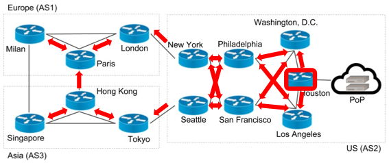

The network semantics, CB-graph abstract convergence theory, and soundness of the CB-Ver verification algorithm are formalized and proved in Lean using Mathlib type classes.
Abstract
Network operators are often interested in verifying eventually-stable properties of network control planes: properties of control plane states that hold eventually, and hold forever thereafter, provided the operating environment remains unchanged. Examples include eventually-stable reachability, access control, or path length properties. In this work, we introduce CB-Ver, a new framework for verifying such properties, based on the key idea of a converges-before graph (CB-graph for short). When a user provides interfaces for each network component, CB-Ver checks the necessary component-by-component requirements in parallel using an SMT solver. In addition, the tool automatically synthesizes a CB-graph and checks whether it connects all nodes in a network – if it does, the interfaces are valid and users can check whether additional eventually-stable properties are implied. Moreover, the CB-graph can then be used to determine fault tolerance properties of the network. We formalize our verification algorithm in the Lean theorem proving environment and prove its soundness. We evaluate the performance of CB-Ver on a range of benchmarks that demonstrate its ability to verify expressive properties in reasonable time. Finally, we demonstrate it is possible to automatically generate suitable interfaces by turning the problem around: Given a CB-graph, we use an off-the-shelf Constrained Horn Clause (CHC) solver to synthesize interfaces for every network component that together ensure the given correctness property.
Problem
Network operators need to verify eventually-stable properties of control planes, such as reachability, access control, or path length, that hold eventually and forever after while the environment is unchanged. Existing modular verifiers either require exact knowledge of converged states or rely on more complex interfaces.
Approach
CB-Ver associates each router with an invariant interface I and an eventually-stable interface Q. It checks local verification conditions in parallel with an SMT solver (Z3) and synthesizes a converges-before graph (CB-graph) that must connect all nodes, which witnesses convergence. The network semantics and the soundness theorem are formalized in Lean, reusing Mathlib's OrderTop and SemilatticeInf. Given a CB-graph, interfaces can also be synthesized automatically using a CHC solver (Spacer/Z3).

Figure 4 : CB-graph of a cross-world network from the Batfish tutorial [ 47 ] . Houston (bordered in red) is a CB-root and directed arrows are CB-edges.
Results
Every theorem in the core theory has a machine-checked Lean proof, released in a public repository. A C# prototype built on Batfish and Zen verifies expressive properties on fat-tree data centers and real-world topologies in reasonable time. The CB-graph also supports push-button fault-tolerance analysis.